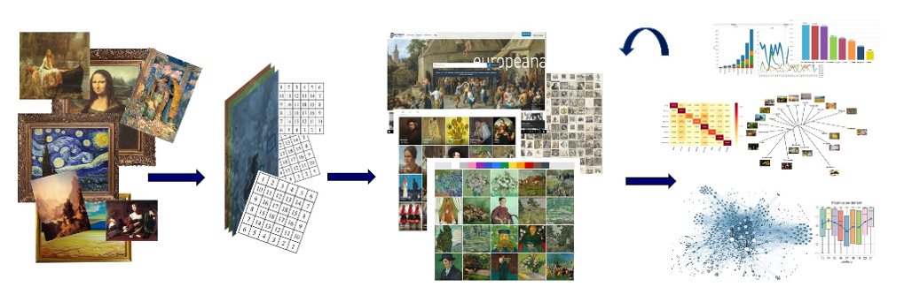
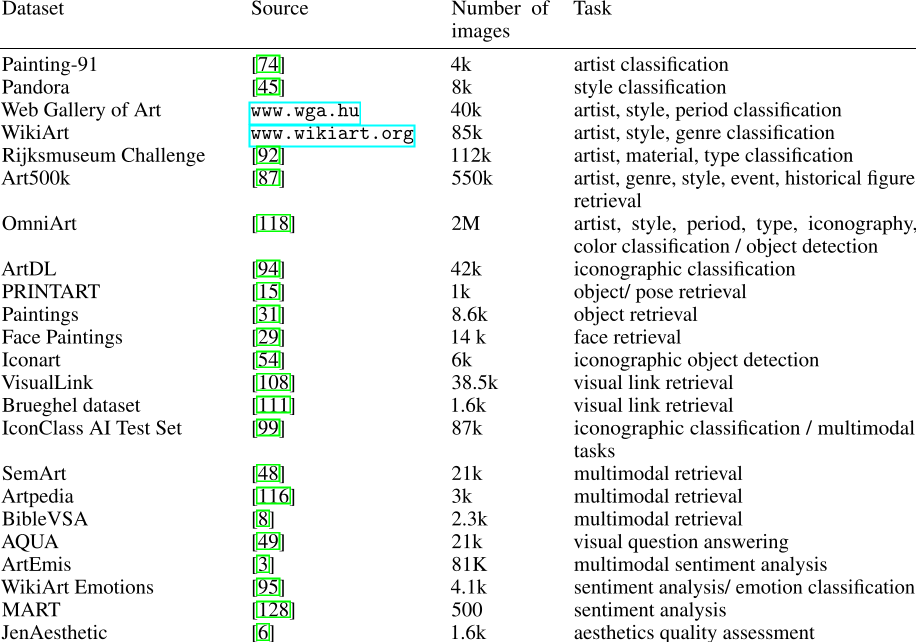
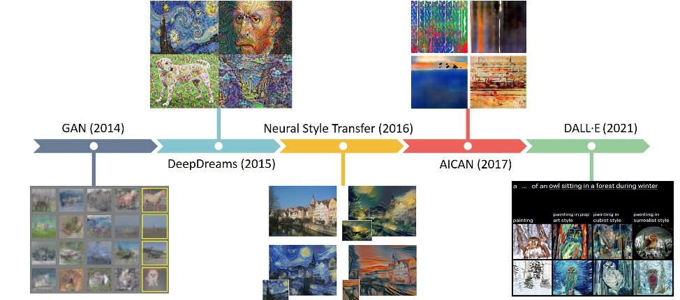

无题
Understanding and Creating Art with AI: Review and Outlook
ABSTRACT
与人工智能（AI）相关的技术对视觉艺术研究和创作实践的变化产生了强烈的影响。
越来越多的研究计划和创意应用出现在 AI 与艺术的交叉领域，促使我们审视和讨论 AI 技术在艺术背景下的创意和探索潜力。
本文对人工智能和艺术的两个方面进行了综合回顾：
- 1）人工智能用于艺术分析，并用于数字化艺术品收藏
- 2）人工智能用于创意目的和产生新颖的艺术品
在与人工智能相关的艺术理解研究的背景下，我们对艺术品数据集和最近的作品进行了全面的概述，这些作品解决了各种任务，如分类、对象检测、相似性检索、多模态表示、计算美学等。
人工智能在艺术创作中的作用，我们解决了人工智能艺术的各种实践和理论方面，并整合了详细处理这些主题的相关作品。
最后，我们对人工智能技术的未来发展和对我们对艺术的理解和创作的潜在影响提供了一个简明的展望
1.Introduction
机器学习的最新进展导致人们对人工智能 (AI) 研究的兴趣加速。
这促进了对人工智能在各个领域的可能应用的探索，并引发了针对缺乏可解释性、机器智能的局限性、潜在风险和社会挑战的批判性讨论。
在探索“人与人工智能”关系的设定中，也许最令人难以捉摸的兴趣领域是对艺术的创造和理解。
在人工智能和艺术的交汇处出现了许多有趣的举措，但是对艺术的理解和欣赏仍然被认为是人类独有的能力。
植根于艺术的存在和意义确实与人与人之间的互动密不可分的想法，本文背后的动机是探索将人工智能引入循环如何不仅可以促进数字艺术和艺术史领域的进步 ，但也激发了我们对艺术未来的看法。
与“人工智能与艺术”相关的各种活动和研究举措，一般可以分为两类：
人工智能用于分析现有艺术的过程
AI 用于创作新艺术的过程。
本文讨论了这两个类别的相关方面和贡献，特别关注人工智能与视觉艺术的关系。
近年来，艺术家、技术人员和研究人员对探索人工智能技术的创造潜力的兴趣激增。
随着生成对抗网络 (GAN) 的出现，人工智能在视觉艺术创作过程中的使用显着加快。
越来越多的艺术家使用人工智能技术，以及画廊和拍卖行对人工智能艺术的兴趣日益浓厚，促进了对这一新运动的各种实践和理论方面的讨论。
另一方面，数字化艺术收藏的在线可用性不断增加，为使用人工智能技术分析艺术史提供了新的机会。
特别是，卷积神经网络 (CNN) 的使用实现了对大量艺术品图像数据进行分类、分类和可视化的高级自动化。
除了构建高效的检索平台、智能推荐系统和探索数字化艺术收藏的先进工具外，人工智能技术还可以通过分析特定艺术品或艺术作品之间关系的新方法来支持艺术史领域的新知识生产。
越来越多的艺术作品、研究和应用出现在人工智能和艺术的交叉领域，促使我们需要在我们对艺术的历史、当代和未来理解的背景下讨论人工智能技术的创造和探索潜力。
2.Understanding Art with AI (AI理解艺术)
2.1 艺术收藏品作为数据源
过去几十年发生的大规模数字化努力导致在线可用艺术收藏品的大量增加。
这些艺术收藏品使我们能够轻松探索和欣赏位于世界各地各种博物馆或艺术画廊的艺术品。
除了使我们能够直观地检查各种艺术品外，大量数字化艺术图像的可用性引发了新的跨学科研究视角。
物理绘画及其数字化对应物以不同的材料模式存在，但它们编码和传达相同的复杂信息结构。
正如画布和颜料的属性通常包括艺术史学家可能非常感兴趣的背景信息一样，数字化艺术品的数字表示也包括其潜力尚未充分开发的信息。
数字化项目的主要目标通常是建立数字存储库，以便更轻松地访问和探索馆藏。
尽管这通常被认为是许多数字化项目的最终目标，但重要的是要强调，这些馆藏的存在只是应用先进计算方法和开辟新研究视角的开始和必要前提。
图 1 说明了使用计算方法从数字化到定量分析、知识发现和可视化的过程。 从该过程的最后阶段获得的研究结果通常用于通过添加先进的内容探索方式来增强存储库和在线馆藏的功能。

在数字化艺术分析的背景下，计算方法通常用于采用远视或近距离阅读方法。
细读意味着关注一件特定作品或艺术作品的特定方面，通常解决诸如视觉风格测量和计算艺术家身份验证等问题
大多数专门针对这些主题的研究都依赖于所分析艺术品的高质量数字复制品的可用性，并且主要关注笔触和纹理属性。
远程查看通常涉及通过专注于特定特征或相似关系并产生相应的统计可视化来分析大型集合。
最近与艺术计算分析有关的大多数研究都在利用包含各种质量图像的大型数字化收藏品的可用性，因此采用了远距离观察方法。
在过去的几年里，越来越多的研究合作涉及计算机视觉和深度学习方法在数字艺术史领域的应用。
最常见的任务包括自动分类、对象检测、基于内容和多模态检索、不同特征和概念的定量分析、计算美学等问题。
大规模和注释良好的数据集的可用性是为各种任务采用深度学习模型的必要要求。
近年来，许多博物馆和画廊都发布了其藏品的数字在线版本。
由于很难列出所有现有的在线艺术收藏品，因此本文仅关注过去几年最常用于计算机视觉和深度学习研究的那些收藏品和数据集。
表 2列出了最知名的主要西方艺术收藏品，这些收藏品经常被用作创建不同任务特定数据集的来源。
此外，它还包括专门为特定研究任务开发的知名和新颖的数据集。

表 2 中的数据集与它们设计或最常用的任务相关联。
大多数在线艺术收藏都包含与整个图像相关的一般注释，并且通常用于分类或检索任务。
这些注释大多由艺术专家提供，包含有关艺术家、风格、流派、技术、时期等的信息。
一些特定的任务，如对象检测，需要对特定图像区域进行更详细的注释。
最近出现了几个与文本描述相关的图像数据集，以执行不同的多模式任务。
用于情感分析和审美质量评估的数据集通常包含通过特定调查或众包平台从多个注释者那里收集的注释。
2.2 艺术品的自动分类
在过去十年中，基于艺术家、风格或流派等类别的艺术品自动分类一直是计算艺术分析的核心挑战之一。
大多数早期研究通过提取各种手工制作的图像特征并使用这些特征的不同机器学习算法来解决自动艺术家、风格和流派分类的问题。
在实现更好的分类精度方面，卷积神经网络 (CNN) 的采用取得了重大进展。
一开始，CNNs首先被用作特征提取器。
卡拉耶夫等人是第一个利用在 ImageNet上训练的 CNN 的层激活，一个大型手工标记的对象数据集，作为艺术风格分类的特征。
在他们的工作中，他们表明，从针对完全不同的任务（自然图像数据集上的对象识别）训练的网络中提取的特征在风格分类任务上优于所有其他低级图像特征。
艺术家 、风格和流派分类确认了基于 CNN 的特征的主导地位，特别是与其他手工制作的特征相结合。
除了使用预训练的 CNN 作为特征提取器之外，Girshick 等人表明可以通过在新目标数据集上微调预训练网络来进一步提高各种视觉识别任务的性能 。
CNN 特征提取和微调都代表了迁移学习的形式，其中模型在一项任务上学到的知识正在被用于新任务。
迁移学习方法，特别是微调，已被证明可以为不同的艺术数据集和各种分类任务提供最先进的结果
为了更好地理解预训练模型的可迁移性，Cetic 等人探讨了在使用相同的 CNN 架构时，不同的微调策略和特定领域的模型初始化如何影响各种艺术分类任务和数据集的分类性能。
萨巴泰利等人分析不同 CNN 架构的可迁移性和微调影响并得出结论，与 Gothier 等人类似还进行了迁移学习分析，当应用于艺术领域的不同任务和数据集时，在艺术数据集上微调的模型优于 ImageNet 预训练模型中介绍了与艺术品分类相关的当前工作的全面概述，以及基于图像元素对艺术品进行分类的方法。
2.3 对象检测和相似度检索
除了分类之外，深度神经网络的使用在探索艺术品内容和自动识别绘画中的物体、面孔或其他特定图案方面显示出可喜的成果。
作为该领域的开创性工作之一，Crowley 等人表明，使用来自自然图像的 CNN 特征训练的对象分类器可以非常成功地检索包含这些对象的绘画。
后来的研究不仅解决了检索描绘特定对象的绘画的问题，而且还确定了对象在图像中的位置，以及检测内容以发现集合中同时出现的模式。
获得特别关注的内容的一个方面是对人脸的描绘。
在绘画中的人物和人脸检测主题以及基于性别和其他特征的检测到的人脸的分析和分类，已经做了一些有趣的工作。
除了人脸，我们还努力识别艺术品中其他与内容相关的元素，例如检测绘画中人物的姿势,识别特定人物或检测绘画中描绘的材料
在艺术图像中采用计算方法进行自动内容和风格识别的主要实际目标之一是构建智能检索系统，该系统可以帮助以有效的方式组织和分析大量艺术品收藏。
许多现有的检索系统依赖于基于其相应的元数据和文本描述来检索图像。 然而，使用卷积神经网络，在通过基于图像的查询获得相关结果方面取得了重大进展。
“视觉相似性”的概念通常被认为是各种检索系统中的关键因素。
然而，在艺术的语境中，“相似性”是一个复杂的术语，可以包括内容匹配的不同方面（相同对象的描述或相似的图像表示）或与风格更相关的对应关系，如笔触、颜色、构图、 等。 CNN 的应用在检索绘画收藏中的视觉链接图像方面显示出有希望的结果 。
为了解决艺术中相似性的复杂性，Mao 等人提出了 DeepArt 检索系统，该系统对可以同时捕获内容和样式特征的联合表示进行编码
2.4 多模式任务
2.5 艺术史中的知识发现
2.6 美学与知觉
Creating AI Art（AI生成艺术作品）
3.1 Technological Milestones

3.2 The Contemporary AI Art Scene
3.3 Novelty of AI Art
3.4 Machine Autonomy and the Role of the Artist
3.5 Authorship, Copyright and Ethical Issues
3.6 Perception of AI Art
Conclusion and Future Outlook
目前的趋势表明，人工智能技术将在艺术的分析和生产中变得更加重要。
在过去的几年里，许多大学已经建立了数字人文 (DH) 硕士和博士课程，以教育新一代研究人员熟悉定量和基于人工智能的方法及其在人文数据中的应用。
我们可以预期，这将加强人文学科从传统研究实践向数字研究实践的方法论转变，并导致越来越多的创新研究项目应用大规模定量方法来研究与艺术相关的历史问题。
从计算机视觉的角度来看，为了协助研究人员从事文化数字档案工作，仍有许多实际挑战需要解决。
特别是与注释标准、高级对象检测和检索、交叉描述、图像分类、多模态对齐和图像理解相关的问题。
以前，深度神经网络模型的使用取决于大规模数据集的可用性。
通过利用迁移学习和标签稀缺技术（例如少镜头学习）的概念，深度神经网络模型可以应用于较小的数据集，并用于不同的细粒度任务和各种图像集合。
未来许多特定领域的数字艺术史项目可能会利用这些方法。
除了采用深度学习模型来加强艺术史研究实践之外，值得注意的是，艺术领域的任务和数据源在开发新的计算机视觉和深度学习技术方面具有的潜力。
数字化艺术收藏是图像的数据源，通常包括与其形成的历史和技术方面相关的丰富背景信息，但也代表了融合了内容和风格的交织概念的感性视觉信息的来源。
因为它们包含不同的信息层，艺术收藏品代表了一个有用的数据源，用于解决计算图像理解的各种复杂任务。
在艺术创作和生产的背景下，人工智能技术开始发挥越来越重要的作用。
不仅在数字化和人工智能产生的艺术方面，而且在传统艺术的策展、展览和销售的各个方面也是如此。
考虑到由于当前的全球大流行，注意力迅速转移到在线平台和数字展厅，目前的情况导致人们对加密艺术和区块链技术的兴趣已经上升，这些技术有可能对艺术市场产生重大影响和转变。
关于使用 AI 技术创作艺术，在过去几年中，基于 GAN 的方法在 AI 艺术领域占据主导地位。
最近，多模态生成模型的发展取得了重大突破，例如 可以从文本生成图像的模型。
这个方向的技术进步可能会对艺术的生产和创作产生重大影响。
可以将来自不同模态的数据转换为联合语义空间的模型代表了一种有趣的艺术探索工具，因为多模态的概念是许多艺术形式不可或缺的一部分，并且在创作过程中一直发挥着重要作用。
此外，很明显，在艺术创作中越来越多地使用人工智能技术将对与作者身份相关的问题以及我们人类对艺术的感知产生重大影响。
随着人工智能模型的发展，可以生成非常令人信服地模仿人类文本、视觉或音乐创作的内容，我们对艺术的许多传统以及当代、理论和实践理解可能会受到挑战。